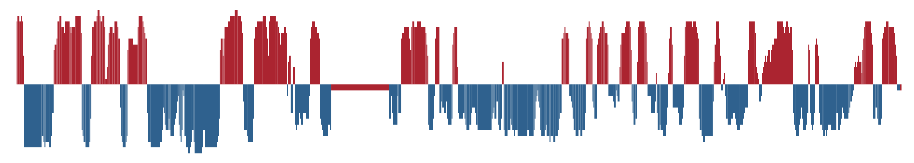

Thoughts and Prayers
Here goes my thoughts and frustrations about the tools, the results, or the project in general.
Notes on methods
- (Wang et al. 2019) uses a sliding window approach (Dixon et al. 2015) to calculate the obs/exp matrices for the PCA. I will try that next, and work within the
cooler/cooltoolsframework which has a Python API and is thus more suitable to run in Jupyter Notebooks. HiCExploreruse a genome-wide contact-distance-based normalization method (dist_norm) to generate obs/exp matrices for PCA (similar to (aiden2009comprehensivemappinglongrange?)) that may introduce biases. I don’t know why, but it looks more like (Wang et al. 2019) when subtracting the running average [triangular windows, Kasper did this] from the computed PCs.
Notes on Quarto
I feel like i have the Markdown/Quarto thing under control, which is pretty nice. It is going to be really cool when actually starting to write the manus (I think).
Notes on HiCExplorer
It feels very old school and unnecessary that I can’t just output the HiCExplorer commands [plots] to the Jupyter display. I have to save the plots to .pngs, which is flooding my figures directory. I should probably clean it up.
I have created plots to mimic the (Wang et al. 2019) for the chr12 as well as chrX. They don’t compare very well with Wang2019, and the both PC1 and PC2 plot looks like they’re highly biased (only intersects 0 one time). PC3 looks more reasonable, but I don’t know if it is reasonable at all to use the 3rd PC in stead of the 1st. I guess it means that the compartmentalization is not the most variable feature, and there are some biases that we have to get rid of. That, or the X chromosome is divided only into two compartments in fibroblasts (unlikely).
{kind=link}
{kind=link}
Plotting .cool files with h5py and pyBigWig
It does not work as I want. To read both the matrix and PC components, it requires an abnormal amount of memory (I don’t think it is strictly necessary to load 75 Gb of data into memory to make a 5x8” plot). However, HicExplorer advise against merging bins after correction and normalization, but I just don’t get that. I see no reason it could mess up the correction. Jupyter Display and, ultimately, my screen resolution makes that binning, so It would be completely fine to just bin the matrices after the fact.
Notes on Open2C framework
pairtools
I’m considering to just map the reads again with bwa, mates together to create a pairs file in the first place. Alternatively, I will use samtools sort | samtools fixmate to convert them back into a paired-end alignment for inputting into cooler. Their own recommendation is to map with bwa mem with paired-end mates.
Ended up mapping them again
cooler
I’ve decided that this is a much better tool than HiCExplorer, the overall experience is way better. The Python API makes it optimal for Jupyter Notebooks, in stead of doing shell escapes in every cell. It can plot 10kb bins without any issue.
Update: 08-10-2024
It took more than a week to get a valid .pairs file and to get that processed into a .cool matrix. But now it seems to work pretty smoothly, and I believe it is more customizable. The pairs are split up into .nodups, .dups, and .unmapped pairs, meaning all the reads are still saved. A dedup.stats is also generated and visualized with MultiQC.
I made these plots of both uncorrected and corrected (ICE) matrices (made with cooler)
{kind=link}
{kind=link}
Neither of them really resembles the ones from (Wang et al. 2019), but we have some confidence in our method still. Next step is to do the default compartmentalization analysis from cooler as well.
Update 10-10-2024
I plotted the weights variable below the interaction maps. Maybe it will be useful.
{kind=link}
Also, we can plot the coverage divided into cis and all contacts, as well as the cis/total coverage ratio:
{kind=link}
Finally, before moving on, we can do some visual improvements to the plot (it does not alter the data), with adaptive coarsegraining and interpolating the matrix. It looks pretty cool:
{kind=link}
Compartments
Finally, I managed to map the compartments with cooler. First, the depencies are imported: numpy, pandas, cooler, cooltools, bioframe, and some more plot-specific packages.
- Load the cooler at a selected binsize.
- Load the reference genome
(bioframe.load_fasta()) - Calculate the GC% in each of the bins
(bioframe.frac_gc())- NB I found some missing values, but only 1 on the X. I don’t know why.
- Calculate the cis eigenvectors to each bin (
cooltools.eigs_cis()), where the GC coverage is used as a ‘phasing’ track.
It is saved as a E1-track, with[['chrom','start','end','E1']] - Plot with
matplotliband submodules. Optionally, we can mark the E1 transitions on the matrix. Here, I removed the horisontal lines.
{kind=link}
A note from the authors of cooltools is that we always have to inspect the E1 values to see how well it captures the compartments in the matrix. Here, it actually doesn’t do very well, So i’m not sure what went wrong. The E1 values seem to have a lot of sign changes, that are not visible in the plot. Maybe it looks better with 500kb resolution.
Here, comparing to the Wang paper:

{kind=link}
I’m very positive about the results. The compartments do not match completely, but we have to take into account another mapping algorithm and a new (updated) reference genome rheMac10, where more than 99% of the segmentation is removed, compared to rheMac2. It is evident in the (Wang et al. 2019) PC1 plot, that a chunk in the middle is missing, possibly due to unmmapped reads. In any case, here is higher-resolution of PC compartments, as more Hi-C contacts can be mapped.
Compartments 500kb resolution looks smoother
I made the same plot as above, but using a 500kb bin size in stead. It looks more smooth, but it is not obvious if we a removing valid information or noise. It looks more like it captures only the visible compartments in the matrix, whcih is good

Or the full size E1 plot:

To ease the eye, here are the 100kb E1 and 500kb E1 plots next to each other:
500kb resolution:
100kb resolution
Compartments on all cell types (By merging all samples from each type)
Now it is time for the analysis of the other cell types as well. Here, we trust (Wang et al. 2019) when they state that their compartments were highly reproducible between replicates.
Thus, we merge all samples from each cell type, leaving us with 5 coolers at 10 kb bins. We then zoomify the coolers to include the resolutions 50, 100, and 500kb binned data as well.
We continue with the analysis with the 500kb binned data, as it runs faster, uses less memory, while still being sufficient for chromosome-wide analysis.
Calculating the eigenvectors again
Initially, the results were not as expected, as the E1 did not reflect the plaid pattern from the matrix from all cell types. In stead, it showed two compartments.
As stated in (aiden2009comprehensivemappinglongrange?) and cooltools documentation, the E1 occasionally does not reflect the plaid pattern from the interaction matrix, but rather a two-compartment chromosome. That happens when the difference in interaction frequencies differ more between the chromosome arms than it does within the arms. To mitigate such cases (or get the correct compartments), we can either use the next eigenvector, or (a better option, in our opinion) calculate the eigenvectors from a chromosome partitioned in the two arms (separated by the centromere).
I determined the region of the centromere from the NCBI browser, in a region from 58-61Mb that have no gene annotations. That region corresponds well with NaN values in the calculated eigenvector (values removed because of low-count bins), as seen below:
{kind=link}
Then, the E1 for each cell type was plotted and looks like we have succesfully reproduced the A/B compartments from (Wang et al. 2019). Also, I noticed after all this, that they also partition the chromosomes at the centromere. The more you know…

Furthermoere, we wanted to see if we could apply the same smoothing as they did: They calculate the obs/exp matrix on a smoothed 100kb matrix: they slide a 400kb window with a step size of 100kb, summing the values.
It turned out to be practically very hard to do in the Open2c ecosystem, so I decided to apply the smoothing directly on the calculated E1 values.

Now we will do some planning, tidying, and writing before continuing the analysis.